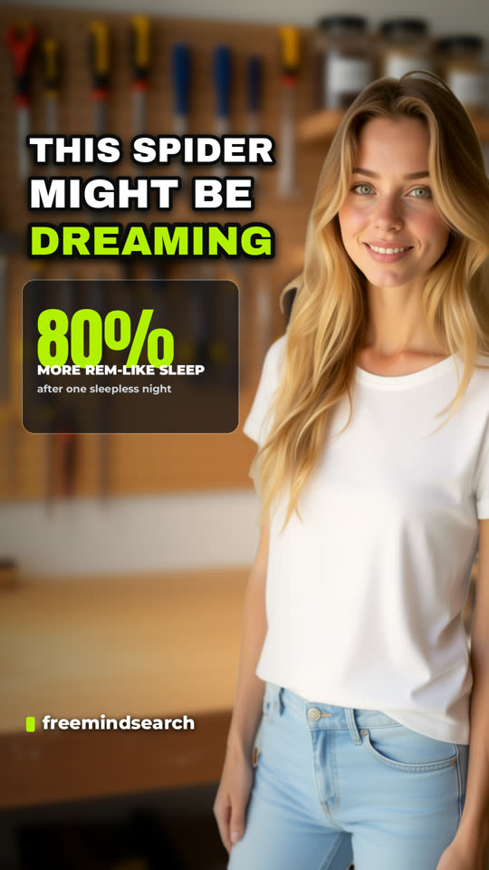

Story
Scientists Caught a Spider Having REM-Like Sleep
Researchers kept a jumping spider awake all night, then watched it sleep the next one. It spent far more time in a twitchy, REM-like stage than usual, the same kind of rebound mammals show after losing sleep.
Watch on FacebookWatch on InstagramWatch on TikTokWatch on YouTube
So, do you think this tiny spider, might actually dream?
Sources
Made with AI: the presenter, voice and visuals are AI-generated. Every story is researched and fact-checked by a person, with its sources listed.